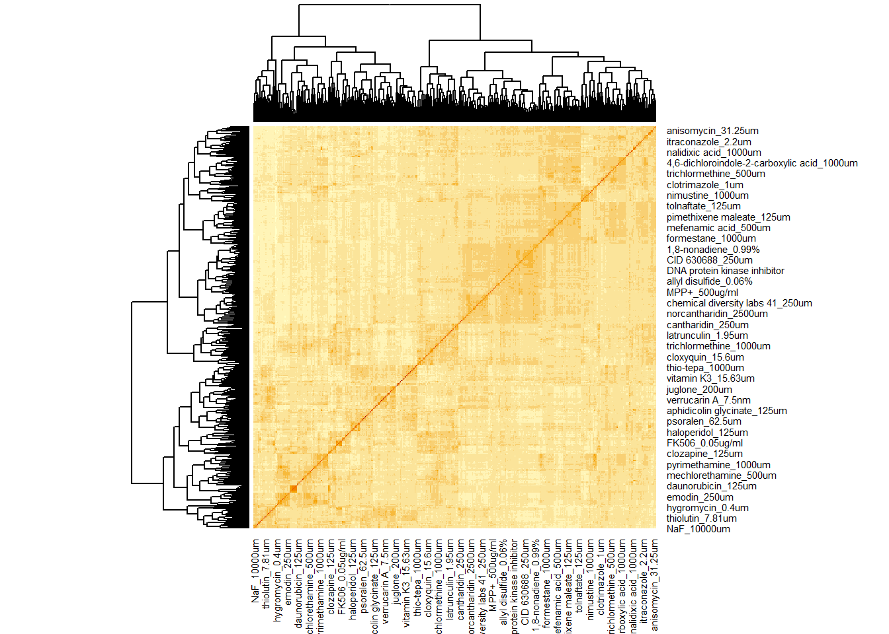
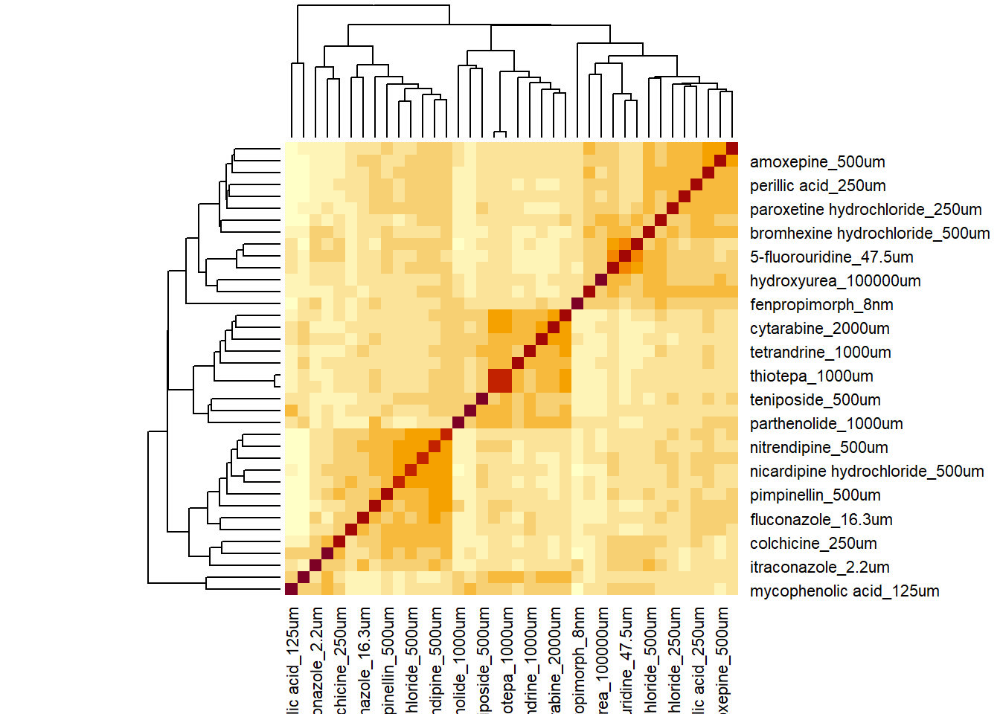
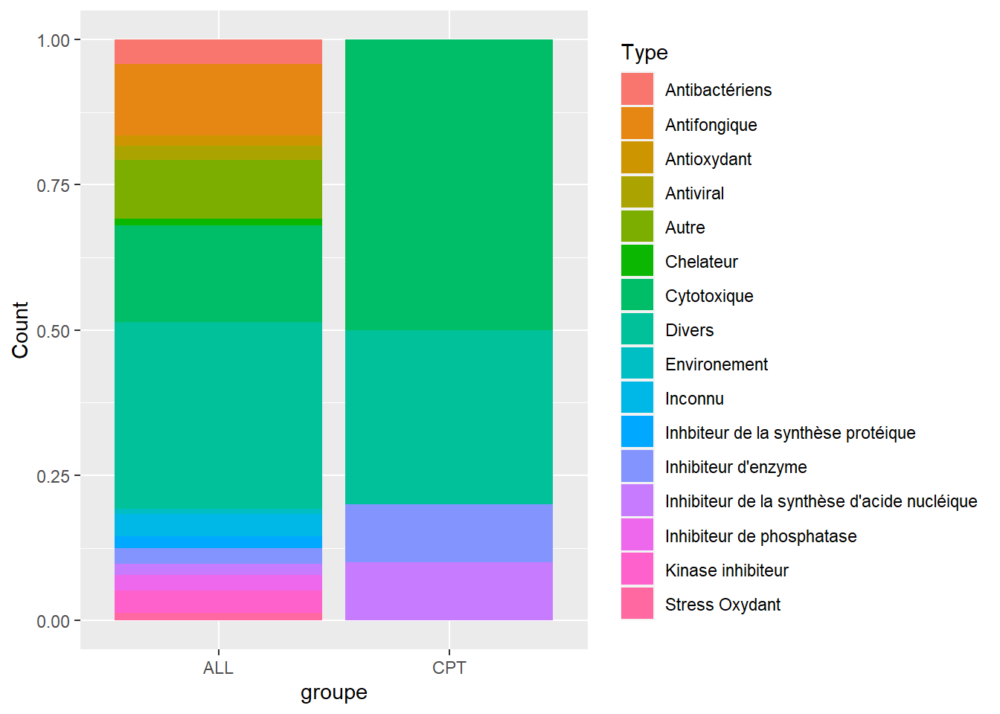

Chapter 7 Correlation
library(tidyr)
library(stringr)
library(FactoMineR)
library(ggplot2)
library(ggrepel)7.1 Mesure de correlation entre les mutants
cor_mut <- d_merge[-c(1,2)] %>% t() %>% cor()
#heatmap(cor_mut)7.2 Mesure de correlation entre les stress
cor_stress <- d_merge[-c(1,2)] %>% cor()
heatmap(cor_stress)
7.2.1 Stress du groupe Camptothecine
cor_stress_red = d_merge[colnames(d_merge) %>% sapply(function(x){
if(x %in% stress_campto){
TRUE
}
else {FALSE}
})] %>% cor()
cor_mut_red = d_merge[colnames(d_merge) %>% sapply(function(x){
if(x %in% stress_campto){
TRUE
}
else {FALSE}
})] %>% t() %>% cor()
tmp = heatmap(cor_stress_red)
#heatmap(cor_mut_red)3 sous groupes sont visibles, mesure de l’enrichissement du sous groupe contenant la camptothecine :
tab = read.csv2("data/All_stress_annotated.csv", sep = "\t", header = TRUE)
y = data.frame(type1 = tab$Type %>% unique(), type2 = c("Cytotoxique", "Inconnu", "Autre", "Environement",
"Chelateur", "Antifongique",
"Cytotoxique", "Divers", "Antibactériens", "Divers", "Kinase inhibiteur",
"Divers", "Antioxydant", "Inhbiteur de la synthèse protéique",
"Inhibiteur de la synthèse d'acide nucléique",
"Divers", "Divers", "Cytotoxique", "Divers", "Cytotoxique", "Divers",
"Divers", "Divers", "Antiviral", "Inhibiteur de phosphatase",
"Inhibiteur d'enzyme", "Divers","Divers" , "Divers", "Divers", "Divers",
"Divers", "Stress Oxydant", "Divers", "Divers", "Environement", "Divers"))
tab[["Type_merge"]] = tab$Type %>% sapply(function(s){
y$type2[y$type1 == s]
}) %>% unlist()
stress_campto2 = stress_campto[tmp$rowInd[c(15:24)]]
gg_campto = data.frame(x = stress_campto2, Type = stress_campto2 %>% sapply(function(y){
tab$Type_merge[y == tab$x]
}))
full_count = data.frame(Type = tab$Type_merge %>% unique(), Count = tab$Type_merge %>% unique() %>% sapply(function(y){
tab$x[tab$Type_merge == y] %>% length()
}), groupe = rep("ALL", tab$Type_merge %>% unique() %>% length()))
campto_count = data.frame(Type = tab$Type_merge %>% unique(), Count = tab$Type_merge %>% unique() %>% sapply(function(y){
gg_campto$x[gg_campto$Type == y] %>% length()
}), groupe = rep("CPT", tab$Type_merge %>% unique() %>% length()))
gg_compar = full_count %>% rbind(campto_count)
ggplot(gg_compar)+
aes(x = groupe, fill = Type, y = Count) +
geom_col(position = "fill")
alpha = 0.05
tests = NULL
for (categorie in full_count$Type) {
m = full_count$Count[full_count$Type == categorie] # total white balls
x = c(campto_count$Count[campto_count$Type == categorie]:m) # white balls tirées (hits)
n = full_count$Count[full_count$Type != categorie] %>% sum() # black balls total
k = campto_count$Count %>% sum() # tirage
mat = matrix(c(campto_count$Count[campto_count$Type == categorie],
k-campto_count$Count[campto_count$Type == categorie],
m-campto_count$Count[campto_count$Type == categorie],
n-(k-campto_count$Count[campto_count$Type == categorie])),
nrow = 2)
#print(fisher.test(mat)$p.value)
tests = c(tests, dhyper(x, m, n, k, log = FALSE) %>% sum())
}
tf = data.frame(categories = full_count$Type, p_val = tests)
tf[tf$p_val < alpha,]## categories p_val
## 1 Cytotoxique 0.01465796